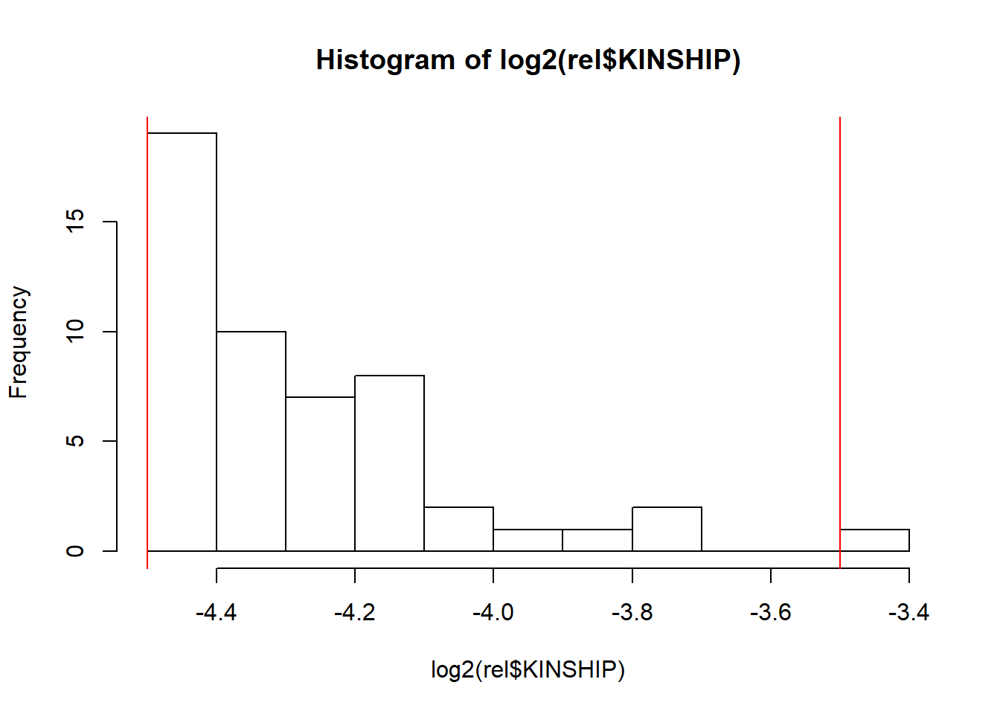
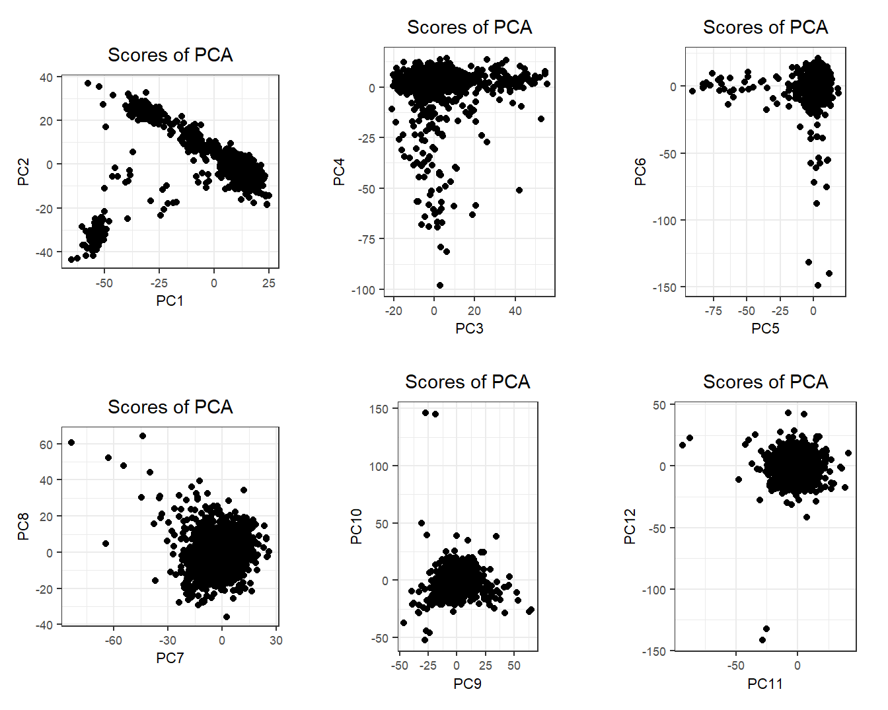
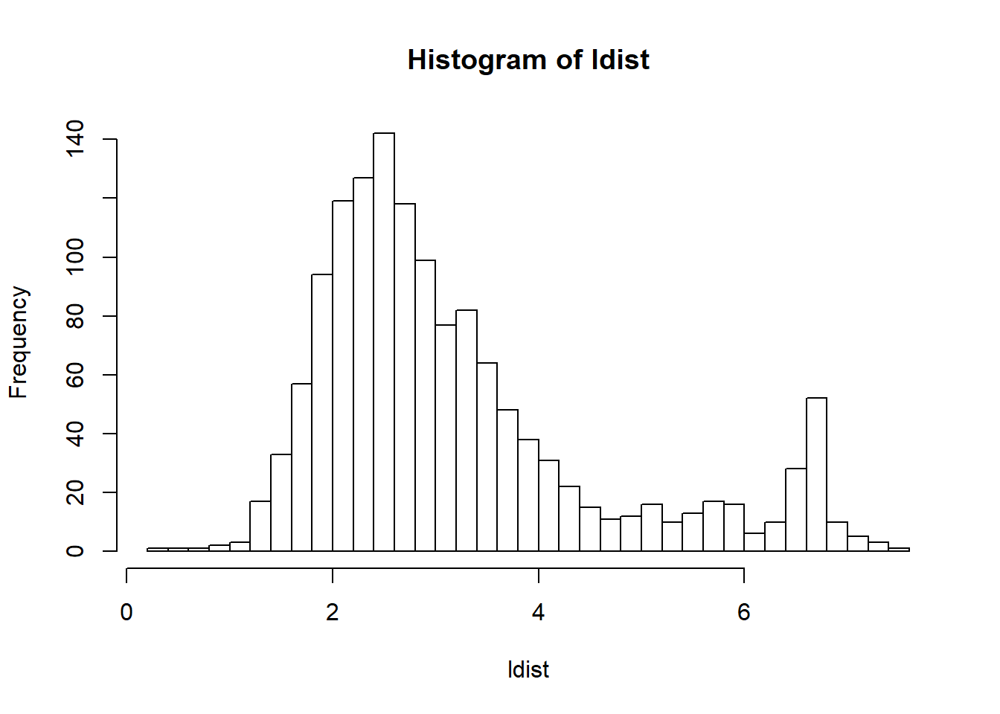

Chapter 4 Population structure
4.1 Principal Component Analysis (PCA)
PCA on the genotype matrix can be used to capture population structure. PCA can capture different kinds of structure (Privé, Luu, Blum, et al. 2020):
population structure (what we want)
LD structure, when there are two many correlated variants and not enough population structure (see this vignette)
relatedness structure, when there are related individuals that can cluster together in later PCs
noise, basically just circles when looking at PC scores
In Privé et al. (2018), I have introduced an algorithm to compute PCA for a bigSNP object while accounting for the LD problem via an automatic removing of long-range LD regions.
In Privé, Luu, Blum, et al. (2020), I have extended the package to be also able to run PCA directly on PLINK bed files with a few missing values, and investigated best practices for PCA in more detail.
In Privé et al. (2021), I have shown how to use PCA for ancestry inference.
There are many steps to compute properly a PCA analysis, which I will try to detail in the following exercise.
4.2 Exercise: population structure
You can find another example in this vignette.
Let us reuse the data prepared in 3.3.
First, let’s get an idea of the relatedness in the data using
library(bigsnpr)
plink2 <- download_plink2("tmp-data")
rel <- snp_plinkKINGQC(plink2, "tmp-data/GWAS_data_sorted_QC.bed",
thr.king = 2^-4.5, make.bed = FALSE, ncores = nb_cores())hist(log2(rel$KINSHIP), "FD")
When computing relatedness with KING, it may be needed to filter out some variants that are highly associated with population structure, e.g. as performed in the UK Biobank (Bycroft et al. 2018). [TODO: also export my code for iPSYCH]
obj.bed <- bed("tmp-data/GWAS_data_sorted_QC.bed")
obj.svd <- runonce::save_run(
bed_autoSVD(obj.bed, k = 20, ncores = nb_cores()),
file = "tmp-data/PCA_GWAS_data.rds")plot(obj.svd)
plot(obj.svd, type = "scores", scores = 1:8, coeff = 0.6)
There is a bit of population structure (it seems at least 6 PCs). It would be better if could get a better sense of the ancestry of these individuals; let us project this data to the 1000G data and infer ancestry as described in Privé et al. (2021).
bed.ref <- bed(download_1000G("tmp-data"))
proj <- runonce::save_run(
bed_projectPCA(bed.ref, obj.bed, k = 25, ncores = nb_cores()),
file = "tmp-data/proj-to-1000G.rds")PC.ref <- predict(proj$obj.svd.ref)
proj2 <- proj$OADP_proj
fam2 <- bigreadr::fread2(sub_bed(bed.ref$bedfile, ".fam2"))library(ggplot2)
source("https://raw.githubusercontent.com/privefl/paper4-bedpca/master/code/plot_grid2.R")
plot_grid2(plotlist = lapply(1:9, function(k) {
k1 <- 2 * k - 1
k2 <- 2 * k
qplot(PC.ref[, k1], PC.ref[, k2], color = fam2$`Super Population`, size = I(2)) +
geom_point(aes(proj2[, k1], proj2[, k2]), color = "black", alpha = 0.1) +
theme_bigstatsr(0.5) +
labs(x = paste0("PC", k1), y = paste0("PC", k2), color = "Ref Pop") +
coord_equal()
}), nrow = 3)
These are clearly mostly European individuals.
ldist <- log(bigutilsr::dist_ogk(proj2))
lims <- bigutilsr::hist_out(ldist)$lim
hist(ldist, "FD"); abline(v = lims, col = "red") sum(ldist > lims[2])#> [1] 4There are 4 outlier individuals that you could remove.